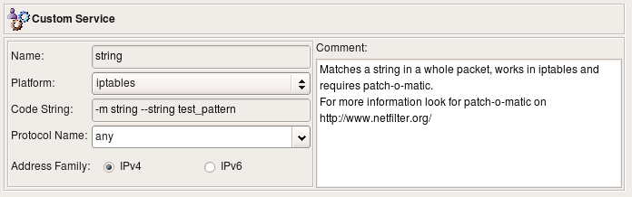
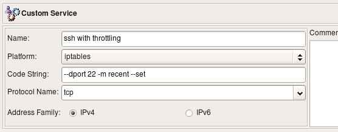
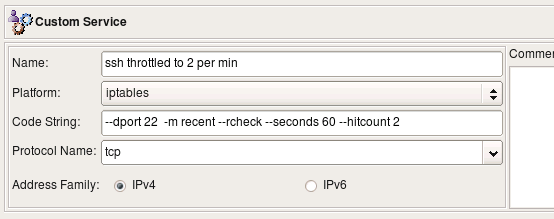
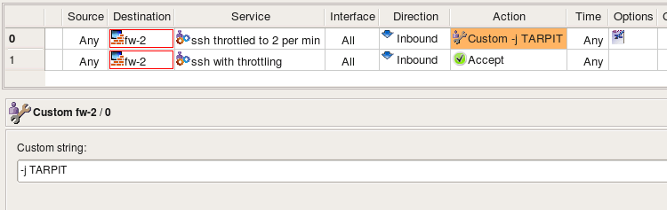

http://www.fwbuilder.org
| Author: vadim@fwbuilder.org http://www.fwbuilder.org |
This article continues the series of articles on Fireall Builder, a graphical firewall configuration and management tool that supports many Open Source firewall platforms as well as Cisco IOS access lists and Cisco ASA (PIX). Firewall Builder was introduced on this site earlier with articles Getting Started With Firewall Builder, Using Built-In Revision Control In Firewall Builder, Using Built-in Policy Installer in Firewall Builder, Using Firewall Object In Firewall Builder. This article demonstrates how you can work with Custom Service object in Firewall Builder.
More information on Firewall Builder, pre-built binary packages and source code, documentation and Firewall Builder Cookbook can be found on the project web site at www.fwbuilder.org. Watch Project Blog for announcements and articles on all aspects of using Firewall Builder.
The Custom Service object can be used to inject arbitrary code into the generated firewall script. Any combination of options allowed in the target firewall command line language that does not fit into a strict model of standard service object types can be expressed using the Custom Service object. For example, iptables comes with a collection of modules that adds an ability to match complex combinations of packet parameters or header fields that are not supported by a standard code. One of the modules adds the ability to match any string in the packet's payload which can be quite useful to quickly build firewall rule to block some new protocol that uses non-specific combination of ports and other parameters. This ability is sometimes used to write rules to block network trojans or viruses with known signatures.
The following screenshot represents a Custom Service object that uses the capabilities of the string module. Command line options specific for this module aren the "Code String" field.
Note: The code specified in the Custom Service is used literally; no validation is done either by Firewall Builder GUI or the policy compilers.
The Custom Service dialog provides the following controls:
The following example uses iptables module "recent". Quoting from iptables manual, this module "allows you to dynamically create a list of IP addresses and then match against that list in a few different ways". We can use this module to throttle brute-force ssh scanning attacks where an attacker repeatedly connects to the ssh daemon trying to guess login name and password. The full explanation of how to use Custom Service object in combination with swatch script on Linux to stop these attacks can be found in the Firewall Builder CookBook. Here we focus only on the Custom Service object and iptables rules that can be obtained with it.
The code string defined in this object is "--dport 22 -m recent --set". This matches port 22 (ssh), activates the module and adds source address of the packet to the default list maintained by the module.
The second Custom Service object also matches port 22 and checks if the address is already on the list and was seen during the past 1 minute twice:
Note that our goal is to match protocol ssh (tcp port 22) and at the same time activate iptables module "recent" and add some parameters for it. Both are done by means of a service object in fwbuilder, however placing two service objects in the "Service" field of a rule joins them by OR. That is, if we were to put TCP service object "ssh" and Custom Service object that defines parameter for module "recent" in the "Service" field of the same rule, we would end up with two iptables commands, one matching tcp port 22 and another trying to use module "recent". Since we need to match both in the same rule, we have to add "--dport 22" to the code defined in the Custom Service object.
Now, the rules using these objects:
Here are the iptables commands generated for these two rules (code copied from the custom service object is in red):
# Rule 0 (global)
#
$IPTABLES -N In_RULE_0
$IPTABLES -A INPUT -i + -p tcp -m tcp \
--dport 22 -m recent --rcheck --seconds 60 --hitcount 2 -j In_RULE_0
$IPTABLES -A In_RULE_0 -j LOG --log-level info --log-prefix "RULE 0 -- DENY "
$IPTABLES -A In_RULE_0 -j DROP
#
# Rule 1 (global)
#
$IPTABLES -A INPUT -i + -p tcp -m tcp \
--dport 22 -m recent --set \
-m state --state NEW -j ACCEPT
#
First, we match port 22 and check if we have seen this source address during the past 1 min at least 2 times. If yes, module "recent" returns match and the packet matches the first iptables rule. Iptables passes control to the rules in chain "In_RULE_0" where the packet is logged and dropped. If the packet does not match conditions set for the module "recent", it does not match the first iptables rule and will be inspected by the next one (generated for the original rule #1). If this is an opening packet of a new session, it matches state "NEW" and will be permitted. Since module "recent" was also called in this rule, the source address of the packet was added to the internal table of the module "recent" so it can be used in the previous iptables rule.
Custom Service allows you to inject arbitrary strings in the generated firewall configuration in the place where normally port matching occurs. Another feature in Firewall Builder that also allows for insertion of a code in the generated code is Custom Action. Combination of Custom Service with Custom Action provides for a very flexible system where you can compose pretty much any required configuration line if it is not otherwise supported by the standard means. Suppose instead of just dropping ssh scan connections coming to our system we want to slow them down, thus tying attacker's resources. Iptables has a target just for that, it is called TARPIT. Unfortunately this target is specific for iptables and is absent on other firewalls supported by fwbuilder and it did not make sense to introduce standard action for it. However Custom Action is the mechanism we can use to generate iptables command with this target. Here is the rule, the action in it was set to "Custom Action". Double clicking on the action in the rule opens dialog with its parameters (if any). Custom Action has one parameter, it is a free style string where you enter the code you want to appear in generated command. The following screenshot shows both the rule and the editor panel:
Here is what we now get when we compile this policy for iptables:
#
# Rule 0 (global)
#
$IPTABLES -N In_RULE_0
$IPTABLES -A INPUT -i + -p tcp -m tcp \
--dport 22 -m recent --rcheck --seconds 60 --hitcount 2 -j In_RULE_0
$IPTABLES -A In_RULE_0 -j LOG --log-level info --log-prefix "RULE 0 -- CUSTOM "
$IPTABLES -A In_RULE_0 -j TARPIT
#
# Rule 1 (global)
#
$IPTABLES -A INPUT -i + -p tcp -m tcp --dport 22 -m recent --set \
-m state --state NEW -j ACCEPT
#
Now the first rule ends up sending packet to the "TARPIT" target rather than "DROP" which is what we wanted.
Custom service object and custom action implement mechanism used to generate target firewall configurations that use unique and rare features not covered by generalized core fwbuilder firewall model. This is the way to generate iptables commands using numerous iptables modules that perform unusual operations not available in other firewall platforms. This method can also be used to generate configuration using new modules and features before fwbuilder catches up and implements support for them in its core feature set.